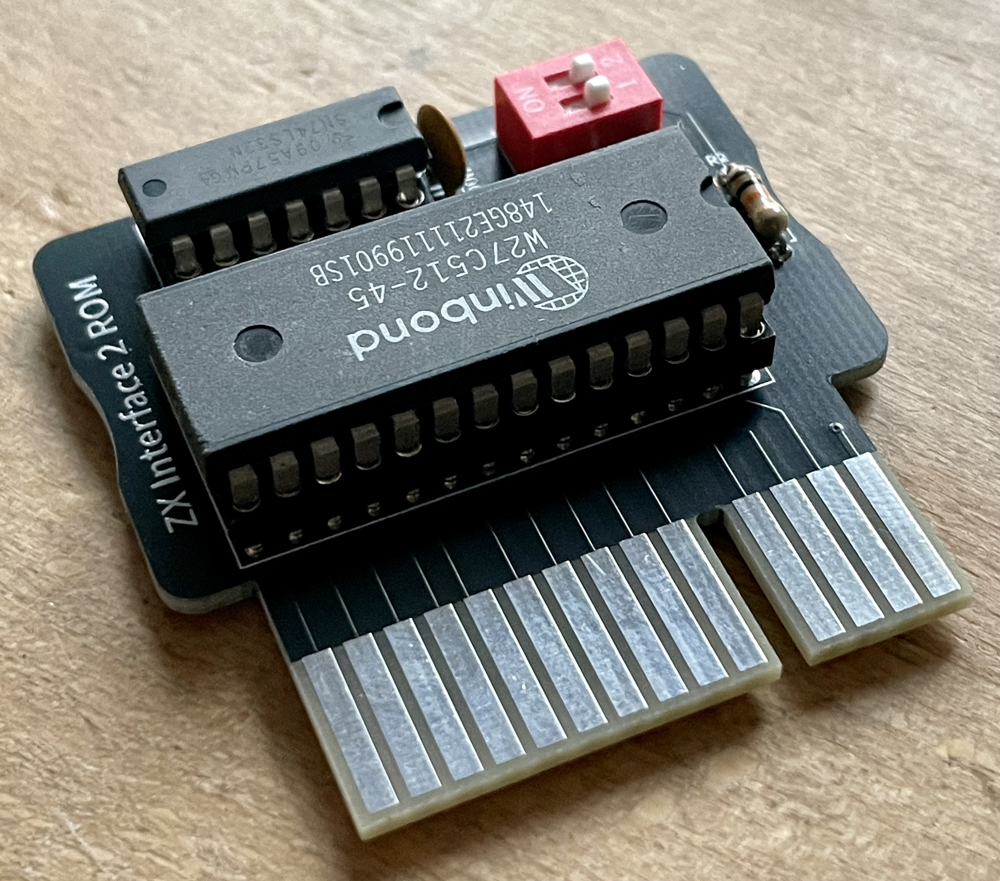

ROM Modul für das original ZX Interface 2. Sollte auch am Interface 2.021 passen.
Projekt-Homepage • Interakiver Bestückungsplan

| Komponente | Anzahl | Preis | Anbieter |
| Platine | 1 | €1.00 | |
| 100nF Kondensator | 1 | €0.03 | Reichelt • Reichelt |
| 10kΩ Widerstand | 2 | €0.08 | Reichelt |
| 2xDIP Schalter | 1 | €0.25 | Reichelt |
| 74LS32 | 1 | €0.72 | Reichelt |
| 27512 EPROM | 1 | €2.56 | AliExpress • eBay |
| 14-Pin Sockel, schmal | 1 | €0.21 | Reichelt |
| 28-Pin Sockel, breit | 1 | €0.49 | Reichelt |
| nur Platine | €1.00 | ||
| Bausatz | €5.34 |